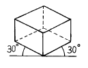
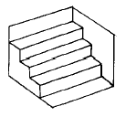
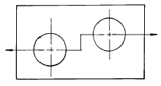
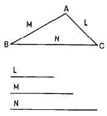
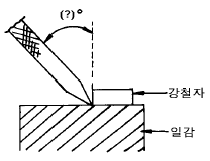
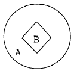
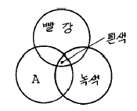

귀금속가공기능사 (2001-04-29 기출문제)
1과목: 공예디자인
1. 제품디자인(product design)과 거리가 먼 것은?
- 공업제품의 디자인
- 그래픽 디자인
- 산업적인 공예품디자인
- 가구 디자인
(정답률: 79%)

2. 탁상드릴 머시인을 사용하여 구멍을 뚫을 때 드릴이 부러지는 이유가 아닌 것은?
- 작업 도중 드릴날이 휠 경우
- 드릴 칩이 구멍에 많이 쌓일 경우
- 일감이 잘 고정되지 않고 흔들리는 경우
- 일감에 드릴날이 수직을 이룰 경우
(정답률: 87%)
3. 율동에 포함되지 않는 것은?
- 교체
- 단조
- 점이
- 균제
(정답률: 78%)
4. 다음 그림의 투상도는?

- 정투상도
- 사투상도
- 등각투상도
- 부등각투상도
(정답률: 83%)
5. 백금(Pt)의 비중은?
- 19.36
- 21.45
- 22.50
- 23.45
(정답률: 73%)
6. 백금(Pt) 합금시 사용하지 않는 금속은?
- Cu
- Ir
- Ag
- Zn
(정답률: 43%)
7. 백금의 주요산지가 아닌 나라는?
- 러시아
- 캐나다
- 남아프리카 연방
- 멕시코
(정답률: 59%)
8. 은의 변색을 방지하는데 가장 좋은 효과가 있는 도금은?
- 로듐(Rh)
- 팔라듐(Pd)
- 루테늄(Ru)
- 오스뮴(Os)
(정답률: 94%)
9. 다음 세공 공구 중 단조 작업시 필요한 것이 아닌 것은?
- 꼭두 망치
- 벼림 집게
- 광쇠
- 모루
(정답률: 93%)
10. 세세션(Sezession)이란?
- 프랑스와 영국을 무대로 일어난 아카데미즘 부활 미술 운동
- 독일과 오스트리아를 무대로 일어난 반 아카데미즘 미술 운동
- 독일과 프랑스를 무대로 일어난 아카데미즘 미술운동
- 프랑스 파리를 중심으로 일어난 공예운동
(정답률: 74%)
11. 한면이 정5각형인 정다면체는 몇 면체인가?
- 정팔면체
- 정십이면체
- 정이십면체
- 정삼십이면체
(정답률: 82%)
12. 분말상 유약에 유성물질을 가하면 겔상유약이 된다. 겔상유약의 종류는?
- 유채유약, 정제상 유약
- 유채유약, 에마리엔 유약
- 에마리엔 유약, 정제상 유약
- 정제상 유약, 선상유약
(정답률: 58%)
13. 조각정 작업시 가장 알맞은 조각정의 유지 각도는?
- 5 ∼ 10°
- 15 ∼ 20°
- 35 ∼ 40°
- 55 ∼ 60°
(정답률: 68%)
14. 작업 중 묽은 황산이 튀어 손등과 옷에 묻었을때 조치해야 할 사항으로 가장 적합한 것은?
- 따뜻한 물로 빨리 닦는다.
- 물로 닦고 알콜에 적신다.
- 알콜을 물에 타서 닦아준다.
- 물로 닦고 소다를 적셔 닦아준다.
(정답률: 100%)
15. 다음과 같은 도형의 착시 현상은?

- 뮬러라이어의 도형
- 대비의 착시
- 상방거리의 과대시
- 반전실체의 착시
(정답률: 60%)
16. 큰 컴퍼스로 그리지 못하는 원을 그리는 제도 용구는?
- 스피링 컴퍼스(spring compass)
- 비례 디바이더(proportional divider)
- 비임 컴퍼스(beam compass)
- 먹줄펜(drawing pen)
(정답률: 62%)
17. 금을 가공할때 터지는 수가 있는데, 다음 중 그 이유가 될수 있는 조건은?
- 용해 열량이 작을 때
- 은(Ag)의 함양이 금(Au)의 함양보다 많을 때
- 납(Pb)성분이 있을 때
- 순금을 가공할 때
(정답률: 68%)
18. 포장, 천정, 벽, 바닥의 색 선택에 가장 필요한 색관계는?
- 색의 동정감
- 색의 시인도
- 색의 중량감
- 색의 피로감
(정답률: 54%)
19. 치수기입 요령에 관한 설명 중 올바른 것은?
- 원주와 둥근 구멍의 크기는 지름치수로 표시한다.
- 지름(ø)기호는 치수 숫자 뒤에 작은 크기로 쓴다.
- 180°이하의 원호크기는 지름치수로 표시한다.
- 반지름 기호 R은 치수 숫자 뒤에 같은 크기로 쓴다.
(정답률: 47%)
20. 금속이 묽은 질산에는 녹으나 진한 질산은 금속표면에 치밀한 산화막을 만들어 내부를 보호하기 때문에 녹지 않는다. 이와 같은 상태를 금속의 부동태라 하는데 이와 같은 부동태 현상이 일어나는 금속은?
- 철, 백금, 금
- 은, 동, 아연
- 금, 은, 니켈
- 철, 니켈, 알루미늄
(정답률: 47%)
2과목: 귀금속재료
21. 형태에 대한 설명 중 잘못된 것은?
- 현실적 형태는 자연형태와 인위적인 형태로 나눌 수 있다.
- 추상형태와 순수형태는 전혀 상관이 없다.
- 이념적 형태는 직접 감득되거나 지각되지 않는 형태이다.
- 조형이란 인간이 형을 성립 시켜 만든것을 말한다.
(정답률: 84%)
22. 드로잉 집게를 사용하는 작업은?
- 벼림질
- 선재뽑기
- 주조집게
- 융해집게
(정답률: 93%)
23. 황동에 아연의 함량이 증가됨에 따라 감소되는 요인이 아닌 것은?
- 비중
- 열전도
- 전도율
- 내산성
(정답률: 50%)
24. 다음 열거한 결정계 중에서 다이어몬드, 스피넬, 가넷등이 속한 결정계는?
- 사방정계
- 단사정계
- 등축정계
- 6방정계
(정답률: 62%)
25. 화이트 골드(White gold)에 대한 설명 중 맞는 것은?
- 백금을 말한다.
- 은과 백금의 합금속을 말한다.
- 금과 팔라듐의 합금속을 말한다.
- 백금과 금의 합금속을 말한다.
(정답률: 78%)
26. 작업시 발생한 화상에 대한 응급처치로 적절하지 못한 것은?
- 의복을 제거할 때는 화상을 입은 곳의 주위 부분만 잘라 낸다.
- 수포가 발생될 때는 즉시 수포를 제거하고 연고 등을 바른다.
- 신속하게 의사에게 위임시키며, 화상의 원인물을 반드시 알려준다.
- 범위가 좁은 화상은 될 수 있는 대로 빨리 상처부분을 붕산으로 식힌다.
(정답률: 80%)
27. 22K의 금 합금율은?
- 약 85.2 %
- 약 91.7 %
- 약 93.2 %
- 약 95.5 %
(정답률: 86%)
28. 다음 선에 대한 느낌의 설명 중 잘못된 것은?
- S커어브 곡선 - 화려함, 안정, 명료
- 와선 - 복잡, 장려, 불명료
- 수평선 - 안식감, 침착, 안정
- 직선 - 남성적, 명료, 강직
(정답률: 84%)
29. 색상을 둥글게 배열한 모형은?
- 색지각
- 색감각
- 색상환
- 등색상면
(정답률: 88%)
30. 다음 붕사에 대한 설명 중 잘못된 것은?
- 땜 부위에 산화 피막을 방지한다.
- 땜이 잘 흐르도록 촉매 역할을 한다.
- 물에 용해되며 약 450 ℃ ∼ 900 ℃까지 작용한다.
- 땜 납을 절약할 수 있다.
(정답률: 83%)
31. 모터에다 버프를 사용하여 광택을 내려 할 때 다음 중 적합치 않은 제품은?
- 18K 목걸이
- 14K 귀걸이
- 스터링실버브롯치
- 24K 반지
(정답률: 71%)
32. 다음 중 특수한 디자인으로 인하여 줄질이 어려운 부분의 금속 표면의 껍질을 한꺼플 벗기는 방법의 표면처리는?
- 희석황산처리(sulfuric acid)
- 버핑(buffing)
- 보밍(bombing)
- 초음파 세척(ultrasonic clean)
(정답률: 75%)
33. 다음 그림과 같이 절단한 경우의 단면도는?

- 반단면
- 전단면
- 계단단면
- 부분단면
(정답률: 76%)
34. 도금재료로 사용되며 금 합금과 귀금속세공의 땜납 합금재료로서 중요한 금속은?
- 청동
- 백동
- 아연
- 주석
(정답률: 76%)
35. 금을 녹일 수 있는 왕수의 비율이 바른 것은?
- 황산3 : 물7
- 황산7 : 물3
- 초산1 : 염산3
- 초산3 : 염산1
(정답률: 72%)
36. 다음 중 가장 부드러운 느낌을 주는 경우는?
- 채도와 명도가 낮은색
- 차가운 색계통
- 채도가 낮고 명도가 높은색
- 채도와 명도가 높은색
(정답률: 58%)
37. 정밀주조 작업과정 중 매몰재와 물의 원칙적인 혼합비율은?
- 매몰재 100 : 물20
- 매몰재 100 : 물40
- 매몰재 100 : 물60
- 매몰재 100 : 물70
(정답률: 90%)
38. 강옥석에 속하는 보석은?
- 다이아몬드
- 비취
- 루비
- 에메랄드
(정답률: 58%)
39. 다음 그림은 어떤 작도를 나타 내는가?

- 세변의 비례를 나타내는 도법
- 한각의 두변의 크기를 알고 삼각형 구하는 도법
- 삼각형에서 각변을 구하는 도법
- 주어진 세변을 가지고 삼각형을 구하는 도법
(정답률: 80%)
40. 공작물에 금긋기 작업을 할 때에 작업자 위치에서 일감과의 올바른 금긋개의 각도는?

- 좌측, 약45°
- 우측, 약15°
- 좌측, 약30°
- 우측, 약45°
(정답률: 60%)
3과목: 귀금속가공
41. 은(Ag)의 열풀림 온도는?
- 약 400-450℃
- 약 500-600℃
- 약 650-700℃
- 약 800-820℃
(정답률: 55%)
42. 다음 그림에서 B의 명시도가 가장 높게 배색된 것은?

- A - 파랑, B - 흰색
- A - 노랑, B - 검정
- A - 노랑, B - 빨강
- A - 검정, B - 노랑
(정답률: 75%)
43. 다음 중 귀금속 8종에 들지 않는 것은?
- 루테늄
- 티타늄
- 오스뮴
- 이리듐
(정답률: 79%)
44. 귀금속의 감별에 시안검사가 있는데 이검사에 사용되는 시금석(testing-stone)에 대한 설명 중 잘못된 것은?
- 시금석은 색이 옅을수록 좋다.
- 경도는 6.5정도가 좋다.
- 붉은색 마노, 암적색 오닉스를 사용한다.
- 실리카, 규석 등 모혈유암을 사용한다.
(정답률: 67%)
45. 버니어 캘리퍼스(vernier calipers)는 제품의 길이, 폭, 지름, 깊이, 단차 등을 측정하는데 최대 측정치는?
- 1/200mm
- 1/20~1/50mm
- 1/100mm
- 1/1~1/10mm
(정답률: 60%)
46. 다음 중 용융온도가 1554℃에 해당하는 것은?
- Pd
- Rh
- Os
- Ir
(정답률: 45%)
47. 파랑, 바다색, 초록 등의 한색만을 배색 하였을 때의 느낌은?
- 화려하다
- 침착하다
- 활동적이다
- 우울하다
(정답률: 72%)
48. 초음파 세척기를 사용하는 목적으로 적절치 못한 것은?
- 주조물에 붙어 있는 매몰제 제거시
- 연마제를 사용하여 광택작업 후 처리시
- 아주 미세한 구멍등의 불순물을 제거시
- 일감의 표면이 매끄럽고 광택을 유지할 때
(정답률: 70%)
49. 산화크롬(Cr2O3)을 유지로 굳혀 봉상으로 만든 연마제는?
- 황봉
- 적봉
- 청봉
- 흑봉
(정답률: 84%)
50. 보석의 테이블 면에 대해 각을 달리하여 여러면을 만드는 것은?
- 캐보션
- 파세팅
- 거들
- 역 캐보션
(정답률: 60%)
51. 다음 가법혼색을 표시한 그림에서 A에 들어가야 할 색은?

- 노랑
- 파랑
- 청록
- 주황색
(정답률: 56%)
52. 다음 중 땜보조용 철사로 니크롬 강선이나 스텐레스 강선으로 되어 있어 높은 고열에서 잘 견딜 수 있는 유연성이 좋은 선재의 명칭은?
- 핀셋
- 덴텔 와이어
- 강철
- 니크롬선
(정답률: 71%)
53. 원호의 치수기입법 중 기호 R을 붙이지 않을 때는?
- 아주작은 원호
- 아주큰 원호
- 중심이 표시된 원호
- 중심이 표시되지 않은 원호
(정답률: 66%)
54. 빨강의 순색을 먼셀 색상기호로 표시한 것은?
- 5R 4/10
- 5R 4/14
- 10R 6/14
- 10R 4/14
(정답률: 67%)
55. 귀금속의 회수 및 분석에 있어서 습식법에 속하지 않는 것은?
- 질산분석법
- 왕수법
- 황산분석법
- 용융법
(정답률: 84%)
56. 고무주형을 만들 모형(주모형)의 재료는 수축이나 후처리에 대비하여 실물보다 약 몇 % 정도 더 크게 하는 것이 좋은가?
- 5%
- 10%
- 15%
- 20%
(정답률: 95%)
57. 주조에서 고무 주형의 면이 매끄럽게 되기 위해서는 금속모형에 무슨 도금을 하는가?
- Ag
- Pb
- Brass
- Rh
(정답률: 38%)
58. 다음 색의 혼합방법 중 혼합결과의 명도가 두 색의 중간이 되는 혼합은?
- 가산 혼합
- 병치 혼합
- 감산 혼합
- 색광 혼합
(정답률: 72%)
59. 구멍뚫기(drilling)공구로 짝지어진 것은?
- 줄, 탭
- 센터펀치, 핸드드릴
- 가위, 틈새게이지
- 다이스, 실톱대
(정답률: 97%)
60. 조선시대 문화의 설명 중 잘못된 것은?
- 배불숭유 정책에 의하여 유교 문화의 발상이 되었다.
- 기능인들을 천대시 하여 박해하였다.
- 작품의 성격이 세련되고 우아하다.
- 민족적이며 풍토적인 특색을 나타 내었다.
(정답률: 56%)